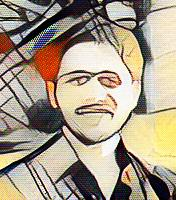

|
Hello, I am Sergio Peignier. Welcome to my personal web-page! My major interests are: Machine Learning, Data Mining, Bio-Inspired Algorithms, Artificial Life, Bio-Informatics, Biology, Evolution and Discourse Analysis. |
 |
|---|
I am currently an Associate Professor at INSA Lyon (Biosciences department). I carry out my research at BF2I lab (Biologie Fonctionnelle Insectes et Interactions - UMR0203).
I also worked as a Post-Doctoral Researcher in Machine Learning at CMLA ENS Paris-Saclay. I had the pleasure to work with Mathilde Mougeot, Nicolas Vayatis and Argyris Kalogeratos. My research project mainly focused on the development of new Transfer Learning techniques for decision trees and random forests. In this context I also contributed to the Data Analytics Post definitions.
My Ph.D. took place at BEAGLE Team-project, INRIA, within the european project Evo-Evo and under the supervision of Christophe Rigotti and Guillaume Beslon. The aim of my project was to take advantage of the biological phenomenon known as evolution of evolution to conceive data mining tasks to analyse static datasets and dynamic data streams.
Email Sergio.Peignier.Zapata AT gmail DOT com
Linked-in profile